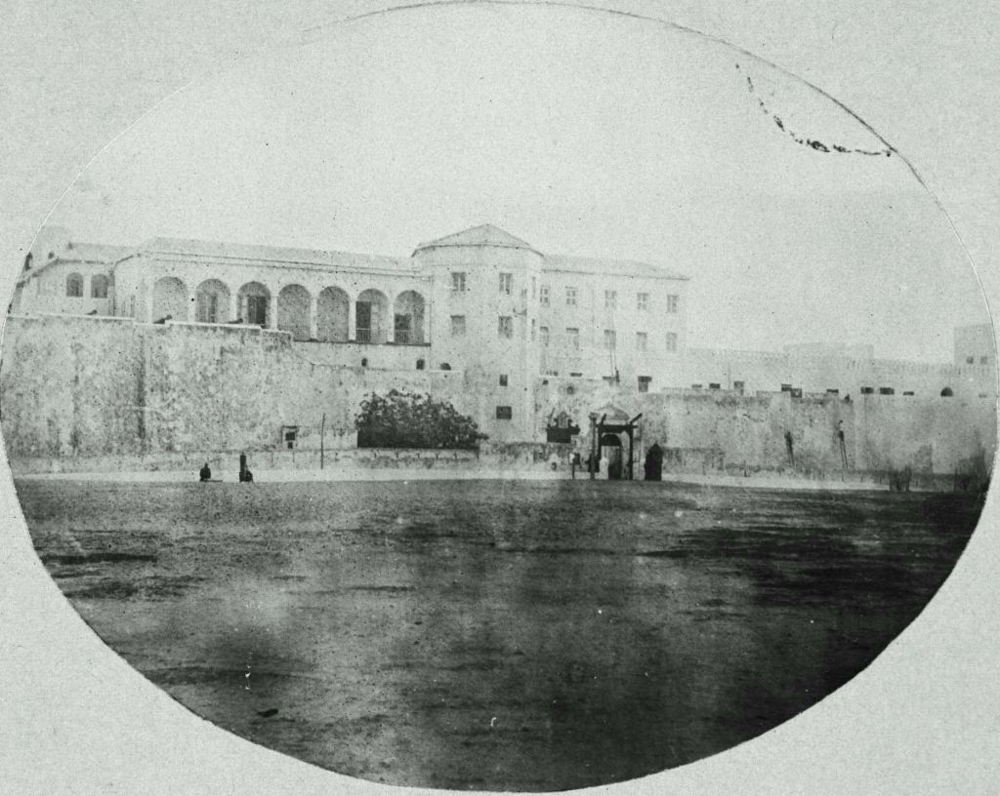
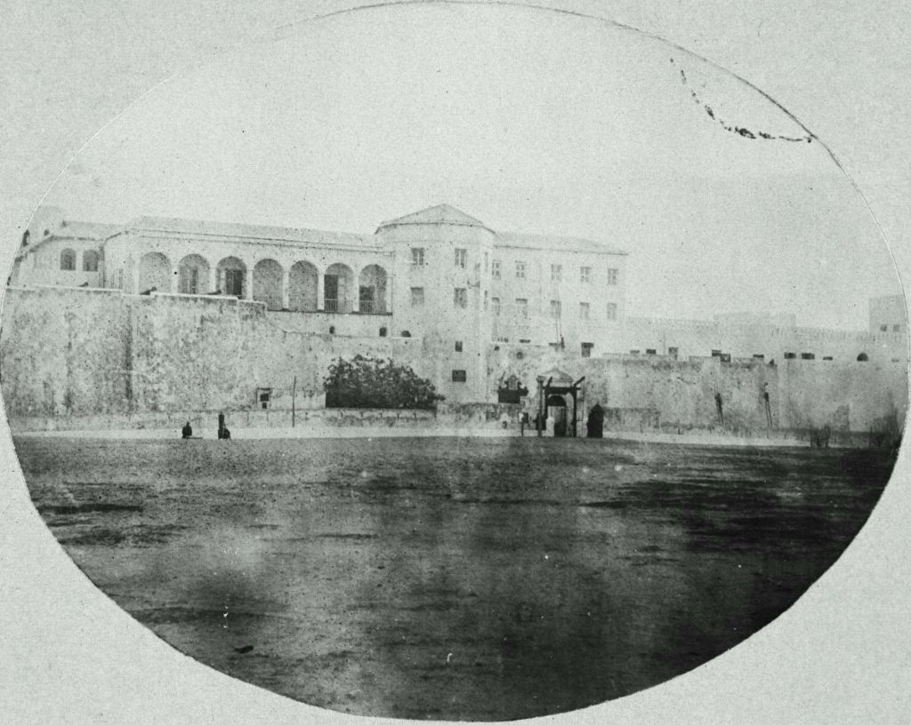

#DOOR
"How a world is shaped by memory." - Sara Ahmed
Curator, cultural programmer and radio host Amal Alhaag focuses in her essay for the publication Work, Body, Leisure on the Door(s) of No Return, an architectural symbol of the slavery and colonialism, and looks into the historical significance and implications in the present.
This essay is merely scratching the surface of the research, (un)thinking, literature, and cultural production examining the complex genealogy and sets of relations, histories, and politics that inform the project Technologies of Certain Bodies.
It is an invitation to complicate, and trace the technologies of certain bodies by invoking the historical and architectural function—meaning the politics and poetics—of the Door(s) of no Return at Fort Elmina, Cape Coast, and the island of Gorée in West Africa in order to question the process by which ethnographic, enslaved, migratory, and gendered people are reduced to bodies by technology. The project is also a proposition to be “in the wake,” and to vigilantly question the engineering of the enslaved African bodies as historical sites for technological innovation of work, body, and leisure.
In what ways do these specific bodies redefine and resist the dominant hegemonic understandings of technology, space, memory, and the body itself? Equally, what does it mean to talk about work, leisure, and the body in the wake of, and amidst the ongoing trauma of African deaths in the Mediterranean Sea?
 
